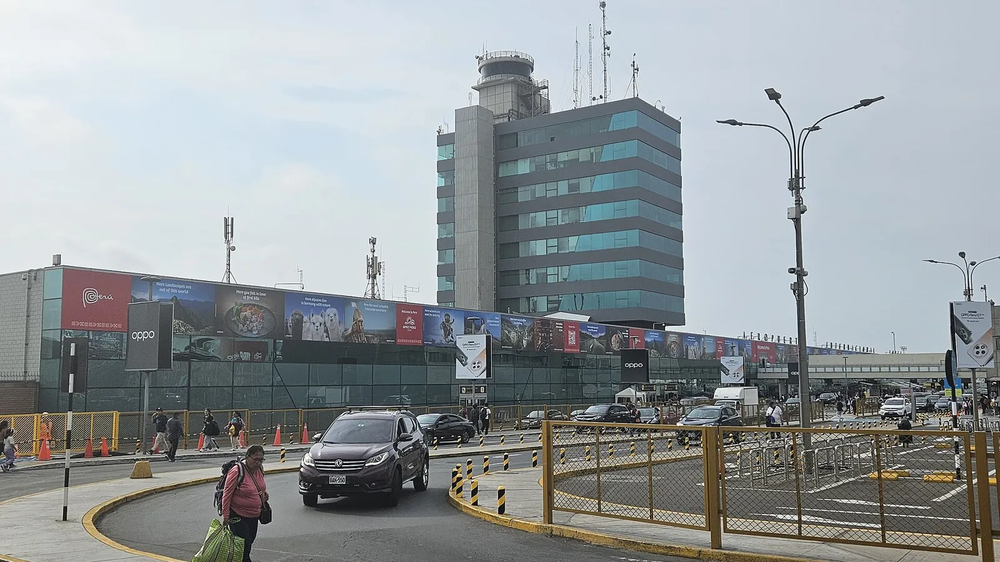
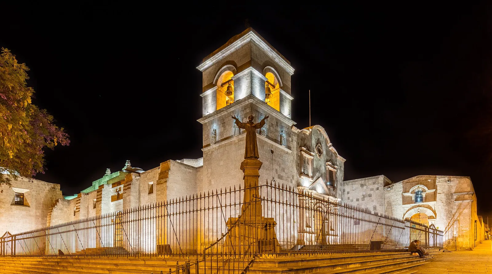
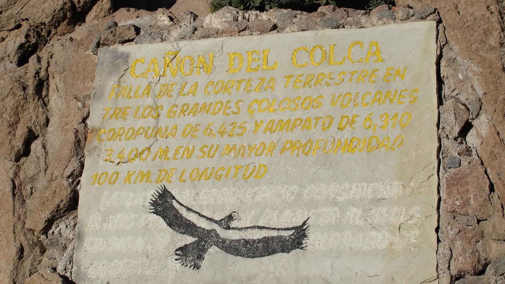
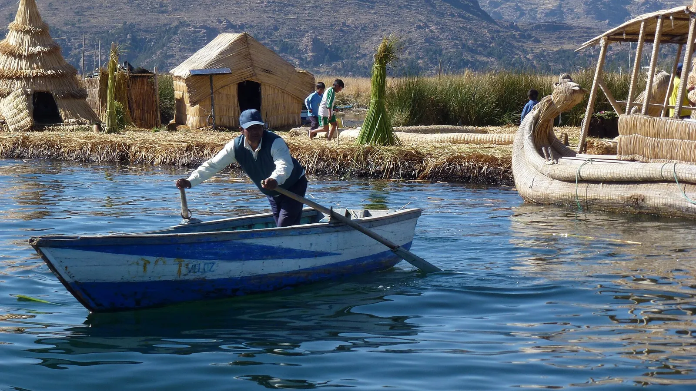
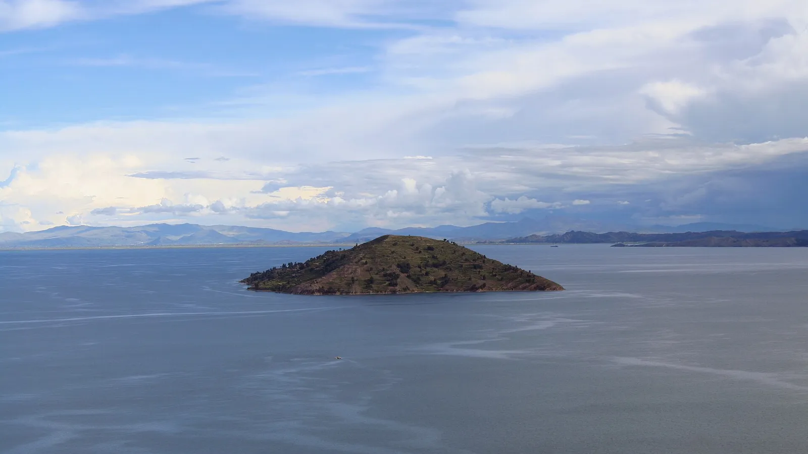
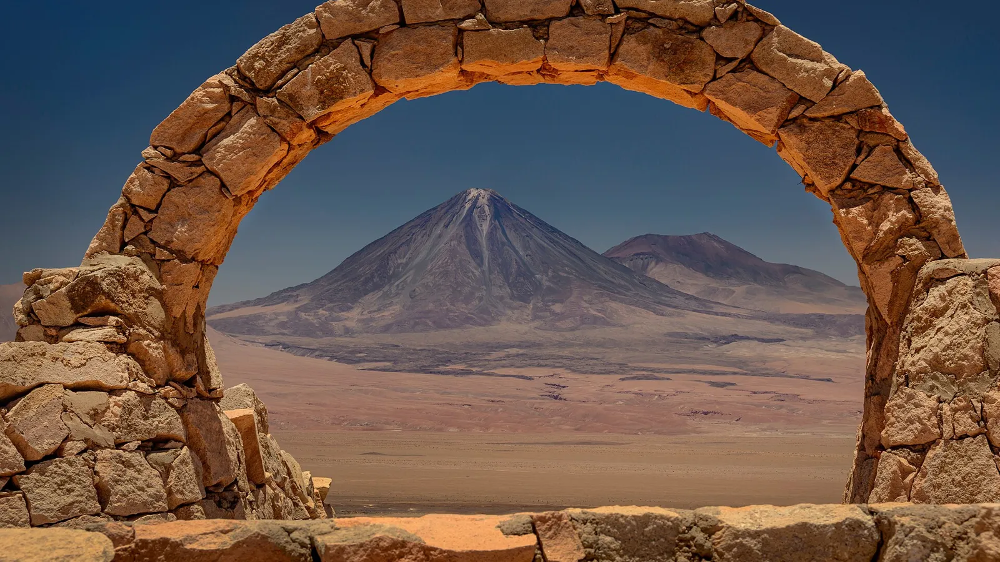
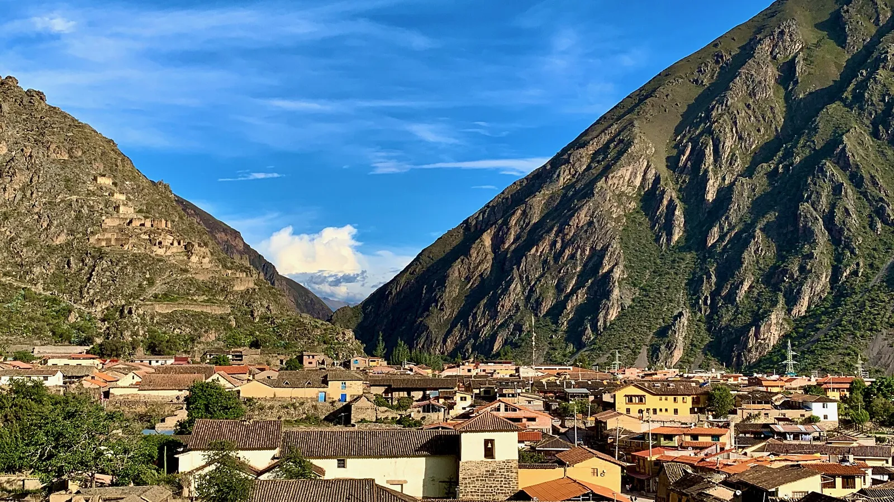
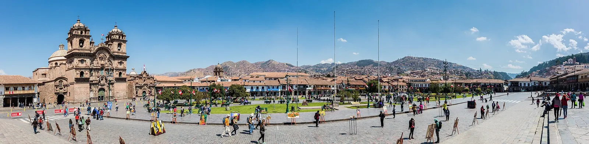
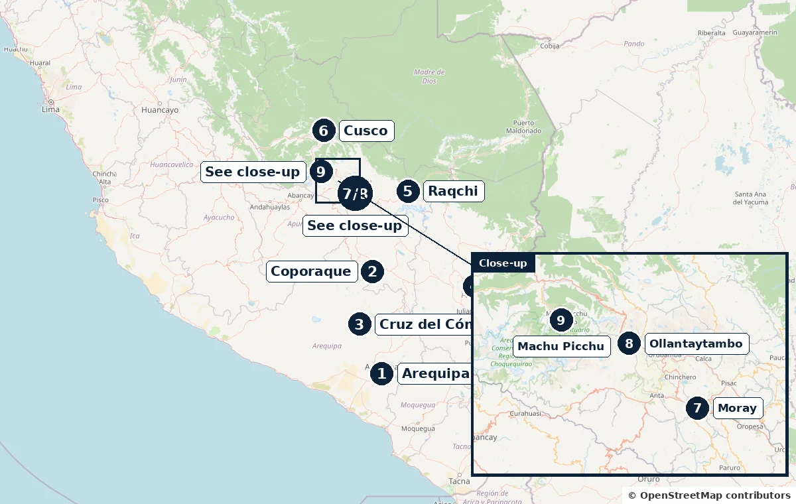

A route through southern Peru that climbs slowly so your body can adjust to the altitude. You start in Lima at sea level, fly to Arequipa at 2,335 m, cross the high puna to the Colca Canyon and a family homestay in Coporaque, watch condors at dawn, then spend a night with a family on Amantaní island in Lake Titicaca. A scenic road with stops at Inca and colonial sites takes you to Cusco, and from the Sacred Valley the train runs to Machu Picchu. We designed this order on purpose: going straight from Lima to Cusco at 3,400 m makes altitude sickness much more likely. Add 3 nights in Paracas and Ica for the Ballestas Islands and the Huacachina dunes if you want the coast too.
See it for yourself
Photos from the journey








Where you go
The journey on one map

LimaArequipaPatapampaCoporaqueCruz del CóndorPunoUrosAmantaníTaquileRaqchiCuscoMorayOllantaytamboMachu PicchuCusco
Day by day, in short
Daily travel brief
Distances are by road for the whole day. The full plan with timings comes with your detailed itinerary.
-
1
-
2
Fly to Arequipa, the white city
- Plaza de Armas and the cathedral: take it easy today and drink plenty of water; this is the first step up in altitude.
- Try the queso helado (frozen milk dessert) in the old town.
-
3
Across the high puna to the Colca Canyon
Mirador de los Andes Patapampa Coporaque
- Patapampa viewpoint: walk slowly here and stay only a few minutes at this height.
- The homestay is simple and nights are cold; extra blankets are provided.
-
4
Condors at dawn, then to Lake Titicaca
- Cruz del Cóndor: condors fly best between about 07:30 and 09:30; sightings are likely but not guaranteed.
- A long day; packed snacks and water are in the car.
-
5
Uros floating islands and Amantaní
- Amantaní and your host family: the climb to the temple is steep at 4,100 m; go slowly or stay below.
- Bring a small gift for the family (rice, oil, fruit), a torch, warm clothes and soles in cash.
-
6
Taquile island and back to Puno
- If the lake is rough, the crew may change the timing; follow their advice.
-
7
The Route of the Sun to Cusco
- A private car is possible instead of the tourist bus and allows more time at each stop.
-
8
The Sacred Valley
- Sleeping lower in the valley helps with the altitude after Cusco.
-
9
Machu Picchu
- Guided visit of Machu Picchu: entry is by fixed time slot and circuit, checked against your passport.
- Guided visit of Machu Picchu: no large bags, walking sticks with metal tips or drones are allowed.
-
10
Cusco and fly home via Lima
- Fly to Lima and connect: allow at least 4 hours between the Cusco flight and an international departure from Lima.
- San Pedro market is good for fruit juices and alpaca wool.
Local know-how
Travel hacks from our desk
Hotel deposit
Use a credit card for the deposit or pre-authorisation at check-in, never a forex or debit card. Forex cards cannot hold funds, many hotels refuse them, and a credit-card hold is released faster.
Soles and cash
Peru uses the sol. Cards work in cities and hotels; carry small soles notes for markets, the islands of Lake Titicaca and the Colca villages, where there are no ATMs.
Altitude
Colca, Puno and Cusco lie between 3,400 and 3,850 m, and the road to Colca crosses 4,910 m. Go slowly, drink plenty of water, avoid alcohol for the first two days and ask your doctor about altitude tablets before you travel. Tell your guide at once if you have a severe headache or feel breathless at rest.
Community etiquette
Ask before photographing people, and expect to pay a small amount if you photograph someone in traditional dress or with a llama. On Amantaní bring a useful gift for your host family, such as rice, cooking oil or fruit, rather than sweets.
Layers for four seasons a day
Days at altitude are sunny and strong, nights are near freezing. Pack layers, a warm jacket, hat and gloves, sunscreen, sunglasses, a rain jacket and comfortable walking shoes.
When to go
Best time to visit for this journey
May, September or October.
April to October is the dry season: sunny days and cold nights, with June to August the busiest. November to March is the rainy season; the Inca Trail closes in February.
The package
What's included
Included
- 9 nights with breakfast
- Dinners at the Coporaque and Amantaní homestays
- Lunch on the Route of the Sun bus
- Domestic flights Lima to Arequipa and Cusco to Lima
- Private car with driver and English-speaking guide
- Lake Titicaca boat trips
- Train to Machu Picchu, bus and entry ticket
- Entry fees as described
- 24/7 support from Blue Diamond Voyage
Not included
- International flights
- Peru visa if needed
- Other meals
- Drinks
- Tips
- Travel insurance (with altitude cover)
The detailed itinerary
Some journeys are planned. Ours are crafted.
The full 10-day plan is ready: hour-by-hour timings, drive times, temple dress codes, food for your diet and a route map for every day. Tell us your dates and your city, and we'll send it to you on WhatsApp, shaped around you.
- Hour-by-hour timings
- A route map for every day
- Hotel and room details
- Visa and entry steps
- Vegetarian and Jain dining
24/7 travel desk+91 97148 59797+91 98242 21400
Photo and map credits
- Jorge Chávez International Airport: TomasVial, CC0, via Wikimedia Commons
- Arequipa: Diego Delso, CC BY-SA 4.0, via Wikimedia Commons
- Cruz del Cóndor: Pavel Špindler, CC BY 3.0, via Wikimedia Commons
- Uros: PIERRE ANDRE LECLERCQ, CC BY-SA 4.0, via Wikimedia Commons
- Taquile: Ingo Mehling, CC BY-SA 4.0, via Wikimedia Commons
- Pukará: ESO/A. Ghizzi Panizza, CC BY 4.0, via Wikimedia Commons
- Ollantaytambo: F Delventhal, CC BY 2.0, via Wikimedia Commons
- Plaza de Armas Cusco: Diego Delso, CC BY-SA 4.0, via Wikimedia Commons
- Maps: © OpenStreetMap contributors; road routes by OSRM.